pacman::p_load(tidyverse, magrittr, olsrr,
broom, car, performance,
see, scales, readxl, nlme,
conflicted)
conflict_prefer("select", "dplyr")
conflict_prefer("filter", "dplyr")
conflict_prefer("mutate", "dplyr")
cbbPalette <- c("#000000", "#E69F00", "#56B4E9", "#009E73",
"#F0E442", "#0072B2", "#D55E00", "#CC79A7")22 Der Pre-Test oder Vortest
Letzte Änderung am 15. January 2024 um 21:40:43
“I struggle with some demons; They were middle class and tame.” — Leonard Cohen, You Want It Darker
Der Pre-Test, ein Kapitel was ich nicht mag. Also eher weniger das Kapitel als den Pre-Test. Auf der einen Seite sind die Pre-Tests hoffnungslos veraltet. Pre-Tests stammen aus einer Zeit in der man sich nicht einfach die Daten angucken konnte. Mit angucken meine ich dann in ggplot visualisieren. Die Idee hinter Pre-Test ist eigentlich die Angst selber die Entscheidung zu treffen, ob die Daten varianzhomogen oder normalverteilt sind. Eine bessere Lösung ist immer noch das Outcome \(y\) zu transformieren (siehe Kapitel 18) und dann das untransformierte Modell mit transformierten Modell zu vergleichen (siehe Kapitel 38.6). Auf der anderen Seite ist der Pre-Test eine Art übermächtiger Entscheider. Dabei sind die Formel sehr trivial und das Konzept eher simpel. Wir können uns aber folgende Faustregel merken:
- Wir testen die Varianzhomogenität auf dem ganzen Datensatz.
- Wir testen die Abweichung von der Normalverteilung für jede Behandlungsgruppe getrennt.
Neben dieser Angst eine Entscheidung zu treffen, hilft einem der Pre-Test zur Varianzhomogenität und der Pre-Test zur Normalverteilung bei kleiner Fallzahl auch nicht wirklich weiter, wie wir gleich sehen werden. Beide Pre-Tests funktionieren erst bei wirklich hohen Fallzahlen gut. Mit hohen Fallzahlen meine ich, Fallzahlen von über 20 Beobachtungen je Gruppe bzw. Level des Faktors. Bei kleiner Fallzahl, also der üblichen Anzahl von weniger als zehn Wiederholungen, können wir auch nur die Boxplots oder Dotplots anschauen. Darüber hinaus können wir uns auch schnell ins Abseits testen, so dass wir gar keinen Test mehr übrig haben um unsere Daten auszuwerten.

Probleme mit dem Pre-Tests ist, dass die Fallzahl in unseren Daten \(D\) oft viel zu klein ist um eine eindeutige Aussage zu treffen.
Visuelle Überprüfung der Normalverteilung und Varianzheterogenität
Das R Paket {olsrr} erlaubt eine weitreichende Diagnostik auf einem normalverteilten Outcome \(y\). Es ist besser sich die Diagnostikplots anzuschauen, als die statistischen Pre-Tests zu rechnen. Besonders bei kleiner Fallzahl. Wenn du dazu dann noch Literatur für deine Abschlussarbeit brauchst, dann nutze doch die Arbeit von Zuur u. a. (2010) mit dem Artikel A protocol for data exploration to avoid common statistical problems oder aber die Arbeit von Kozak und Piepho (2018) mit dem Artikel What’s normal anyway? Residual plots are more telling than significance tests when checking ANOVA assumptions.
Es ist grundsätzlich besser verschiedene Modelle zu fitten und dann sich in Kapitel 39 die Güte oder Qualität der Modelle anzuschauen. Jedenfalls ist das meiner Meinung nach die bessere Lösung. Da aber immer wieder nach den Pre-Tests gefragt wird, habe ich auch dieses Kapitel erschaffen.
Ich habe dir am Ende des Kapitels nochmal den einfachen Weg dein Modell zu überprüfen an einem etwas komplexeren Datensatz aufgezeigt. Schau dir dazu dann die Abbildung 22.16 einmal an. Diese Abbildung kannst du dann auch nachbauen und in deinen Anhang packen sowie dich mit der Referenz drauf beziehen.
22.1 Genutzte R Pakete
Wir wollen folgende R Pakete in diesem Kapitel nutzen.
22.2 Die Flowchart, die jeder möchte…
Dann hier mal gleich zu Beginn die Flowchart, die jeder gerne möchte. In der Abbildung 22.1 sehen wir einmal dargestellt, welches statistische Modell wir rechnen können um dann eine ANOVA und ein Posthoc-Test anzuschließen. Wie du auf den ersten Blick siehst, ist es immer besser auf der linken Seite der Flowchart zu sein. Viele Merkmale in den Agrarwissenschaften folgen per se einer Normalverteilung, so dass sich nur die Frage nach der Varianzhomogenität stellt.
flowchart TD
A("Normalverteiltes Outcome
in jeder Versuchsgruppe"):::factor --- B(((ja))) --> B1 %% C(Varianzhomogenität):::factor
A("Normalverteiltes Outcome
in jeder Versuchsgruppe"):::factor --- F(((nein))) --> B2 %%G(Varianzhomogenität):::factor
subgraph B1["Mittelwertsvergleiche"]
C("Varianzhomogenität
über alle Gruppen"):::factor --- D((("ja"))) --> E("lm()"):::factor
C("Varianzhomogenität
über alle Gruppen"):::factor --- J(((nein))) --> K("gls()"):::factor
end
subgraph B2["Medianvergleiche, OR oder RR"]
G("Varianzhomogenität
über alle Gruppen"):::factor --- H(((ja))) --> I("rq()"):::factor
G("Varianzhomogenität
über alle Gruppen"):::factor --- L(((nein)))
end
classDef factor fill:#56B4E9,stroke:#333,stroke-width:0.75px
lm(), lineare Regression, gls(), generalized least squares Regression, rq(), Quantilesregression. Die Funktionen finden sich teilweise in eigenen R Paketen. Bei einem nicht-normalverteilten Outcome mit Varianzheterogenität über die Gruppen müssen wir nochmal gemeinsam in die Daten schauen.
Du findest die vorgeschlagenen Funktionen dann in den entsprechenden Kapiteln zur ANOVA und den Posthoc-Tests. Du kannst dir dann dort den Code zusammensuchen. Je nach deiner Datenlage musst du dann nochmal etwas an dem R Code programmieren. Beachte, dass die Funktionen sich teilweise in eigenen R Paketen finden lassen. So ist die Funktion gls() im R Paket {nlme} und die Funktion rq() im R Paket {quantreg} zu finden. Du kannst auch bei Varianzheterogenität das R Paket {sandwich} nutzen und einen entsprechend angepassten Varianzschätzer. Mehr findest du dazu bei den Posthoc-Test in dem Abschnitt zu dem Gruppenvergleich unter Varianzheterogenität oder gleich im ersten Zerforschenbeispiel zum einfaktoriellen Barplot.
Und dann auch gleich hier, weil es so schön passt, die Zerforschenbeispiele zu der obigen Flowchart. Im Prinzip kannst du einmal rein schauen und sehen, ob die Abbildung dem entspricht was du möchtest. Mehr zu dem Code findest du dann in den entsprechenden Kapiteln zu den multiplen Vergleichen oder aber der Regressionen.
Zerforschen: Einfaktorieller Barplot mit
lm(), gls() oder sandwich
In diesem Zerforschenbeispiel wollen wir uns einen einfaktoriellen Barplot oder Säulendiagramm anschauen. Daher fangen wir mit der folgenden Abbildung einmal an. Wir haben hier ein Säulendiagramm mit compact letter display vorliegen. Daher brauchen wir eigentlich gar nicht so viele Zahlen. Für jede der vier Behandlungen jeweils einmal einen Mittelwert für die Höhe der Säule sowie einmal die Standardabweichung. Die Standardabweichung addieren und subtrahieren wir dann jeweils von dem Mittelwert und schon haben wir die Fehlerbalken. Für eine detaillierte Betrachtung der Erstellung der Abbildung schauen einmal in das Kapitel zum Barplot oder Balkendiagramm oder Säulendiagramm.

Als erstes brauchen wir die Daten. Die Daten habe ich mir in dem Datensatz zerforschen_barplot_simple.xlsx selber ausgedacht. Ich habe einfach die obige Abbildung genommen und den Mittelwert abgeschätzt. Dann habe ich die vier Werte alle um den Mittelwert streuen lassen. Dabei habe ich darauf geachtet, dass die Streuung dann in der letzten Behandlung am größten ist.
barplot_tbl <- read_excel("data/zerforschen_barplot_simple.xlsx") %>%
mutate(trt = factor(trt,
levels = c("water", "rqflex", "nitra", "laqua"),
labels = c("Wasserdestilation",
"RQflex Nitra",
"Nitrachek",
"Laqua Nitrat")))
barplot_tbl # A tibble: 16 × 2
trt nitrat
<fct> <dbl>
1 Wasserdestilation 135
2 Wasserdestilation 130
3 Wasserdestilation 145
4 Wasserdestilation 135
5 RQflex Nitra 120
6 RQflex Nitra 130
7 RQflex Nitra 135
8 RQflex Nitra 135
9 Nitrachek 100
10 Nitrachek 120
11 Nitrachek 130
12 Nitrachek 130
13 Laqua Nitrat 230
14 Laqua Nitrat 210
15 Laqua Nitrat 205
16 Laqua Nitrat 220Im Folgenden sparen wir uns den Aufruf mit group_by() den du aus dem Kapitel zum Barplot schon kennst. Wir machen das alles zusammen in der Funktion emmeans() aus dem gleichnamigen R Paket. Der Vorteil ist, dass wir dann auch gleich die Gruppenvergleiche und auch das compact letter display erhalten. Einzig die Standardabweichung \(s\) wird uns nicht wiedergegeben sondern der Standardfehler \(SE\). Da aber folgernder Zusammenhang vorliegt, können wir gleich den Standardfehler in die Standardabweichung umrechnen.
\[ SE = \cfrac{s}{\sqrt{n}} \]
Wir rechnen also gleich einfach den Standardfehler \(SE\) mal der \(\sqrt{n}\) um dann die Standardabweichung zu erhalten. In unserem Fall ist \(n=4\) nämlich die Anzahl Beobachtungen je Gruppe. Wenn du mal etwas unterschiedliche Anzahlen hast, dann kannst du auch einfach den Mittelwert der Fallzahl der Gruppen nehmen. Da überfahren wir zwar einen statistischen Engel, aber der Genauigkeit ist genüge getan.
In den beiden Tabs siehst du jetzt einmal die Modellierung unter der Annahme der Varianzhomogenität mit der Funktion lm() und einmal die Modellierung unter der Annahme der Varianzheterogenität mit der Funktion gls() aus dem R Paket nlme. Wie immer lässt sich an Boxplots visuell überprüfen, ob wir Homogenität oder Heterogenität vorliegen haben. Oder aber du schaust nochmal in das Kapitel Der Pre-Test oder Vortest, wo du mehr erfährst.
Hier gehen wir nicht weiter auf die Funktionen ein, bitte schaue dann einmal in dem Abschnitt zu Gruppenvergleich mit dem emmeans Paket. Wir entfernen aber noch die Leerzeichen bei den Buchstaben mit der Funktion str_trim().
emmeans_homogen_tbl <- lm(nitrat ~ trt, data = barplot_tbl) %>%
emmeans(~ trt) %>%
cld(Letters = letters, adjust = "none") %>%
as_tibble() %>%
mutate(.group = str_trim(.group),
sd = SE * sqrt(4))
emmeans_homogen_tbl# A tibble: 4 × 8
trt emmean SE df lower.CL upper.CL .group sd
<fct> <dbl> <dbl> <dbl> <dbl> <dbl> <chr> <dbl>
1 Nitrachek 120 5.08 12 109. 131. a 10.2
2 RQflex Nitra 130 5.08 12 119. 141. ab 10.2
3 Wasserdestilation 136. 5.08 12 125. 147. b 10.2
4 Laqua Nitrat 216. 5.08 12 205. 227. c 10.2In dem Objekt emmeans_homogen_tbl ist jetzt alles enthalten für unsere Barplots mit dem compact letter display. Wie dir vielleicht auffällt sind alle Standardfehler und damit alle Standardabweichungen für alle Gruppen gleich, das war ja auch unsere Annahme mit der Varianzhomogenität.
Hier gehen wir nicht weiter auf die Funktionen ein, bitte schaue dann einmal in dem Abschnitt zu Gruppenvergleich mit dem emmeans Paket und natürlich in den Abschnitt zu dem Gruppenvergleich unter Varianzheterogenität. Wir entfernen aber noch die Leerzeichen bei den Buchstaben mit der Funktion str_trim().
emmeans_hetrogen_gls_tbl <- gls(nitrat ~ trt, data = barplot_tbl,
weights = varIdent(form = ~ 1 | trt)) %>%
emmeans(~ trt) %>%
cld(Letters = letters, adjust = "none") %>%
as_tibble() %>%
mutate(.group = str_trim(.group),
sd = SE * sqrt(4))
emmeans_hetrogen_gls_tbl# A tibble: 4 × 8
trt emmean SE df lower.CL upper.CL .group sd
<fct> <dbl> <dbl> <dbl> <dbl> <dbl> <chr> <dbl>
1 Nitrachek 120 7.07 3.00 97.5 143. a 14.1
2 RQflex Nitra 130 3.54 2.98 119. 141. a 7.07
3 Wasserdestilation 136. 3.15 2.98 126. 146. a 6.29
4 Laqua Nitrat 216. 5.54 3.00 199. 234. b 11.1 In dem Objekt emmeans_hetrogen_gls_tbl ist jetzt alles enthalten für unsere Barplots mit dem compact letter display. In diesem Fall hier sind die Standardfehler und damit auch die Standardabweichungen nicht alle gleich, wir haben ja für jede Gruppe eine eigene Standardabweichung angenommen. Die Varianzen sollten ja auch heterogen sein.
Hier gehen wir nicht weiter auf die Funktionen ein, bitte schaue dann einmal in dem Abschnitt zu Gruppenvergleich mit dem emmeans Paket und natürlich in den Abschnitt zu dem Gruppenvergleich unter Varianzheterogenität. Wir entfernen aber noch die Leerzeichen bei den Buchstaben mit der Funktion str_trim().
emmeans_hetrogen_vcov_tbl <- lm(nitrat ~ trt, data = barplot_tbl) %>%
emmeans(~ trt, vcov. = sandwich::vcovHAC) %>%
cld(Letters = letters, adjust = "none") %>%
as_tibble() %>%
mutate(.group = str_trim(.group),
sd = SE * sqrt(4))
emmeans_hetrogen_vcov_tbl# A tibble: 4 × 8
trt emmean SE df lower.CL upper.CL .group sd
<fct> <dbl> <dbl> <dbl> <dbl> <dbl> <chr> <dbl>
1 Nitrachek 120 7.84 12 103. 137. a 15.7
2 RQflex Nitra 130 3.92 12 121. 139. a 7.84
3 Wasserdestilation 136. 2.06 12 132. 141. a 4.12
4 Laqua Nitrat 216. 4.94 12 205. 227. b 9.88In dem Objekt emmeans_hetrogen_vcov_tbl ist jetzt alles enthalten für unsere Barplots mit dem compact letter display. In diesem Fall hier sind die Standardfehler und damit auch die Standardabweichungen nicht alle gleich, wir haben ja für jede Gruppe eine eigene Standardabweichung angenommen. Die Varianzen sollten ja auch heterogen sein.
Und dann haben wir auch schon die Abbildungen hier erstellt. Ja vielleicht passen die Standardabweichungen nicht so richtig, da könnte man nochmal an den Daten spielen und die Werte solange ändern, bis es besser passt. Du hast aber jetzt eine Idee, wie der Aufbau funktioniert. Die beiden Tabs zeigen dir dann die Abbildungen für die beiden Annahmen der Varianzhomogenität oder Varianzheterogenität. Der Code ist der gleiche für die drei Abbildungen, die Daten emmeans_homogen_tbl oder emmeans_hetrogen_gls_tbl ober emmeans_hetrogen_vcov_tbl sind das Ausschlaggebende.
ggplot(data = emmeans_homogen_tbl, aes(x = trt, y = emmean, fill = trt)) +
theme_minimal() +
geom_bar(stat = "identity") +
geom_errorbar(aes(ymin = emmean-sd, ymax = emmean+sd),
width = 0.2) +
labs(x = "",
y = "Nitrat-Konzentration \n im Tannensaft [mg/L]") +
ylim(0, 250) +
theme(legend.position = "none") +
scale_fill_okabeito() +
geom_text(aes(label = .group, y = emmean + sd + 10))
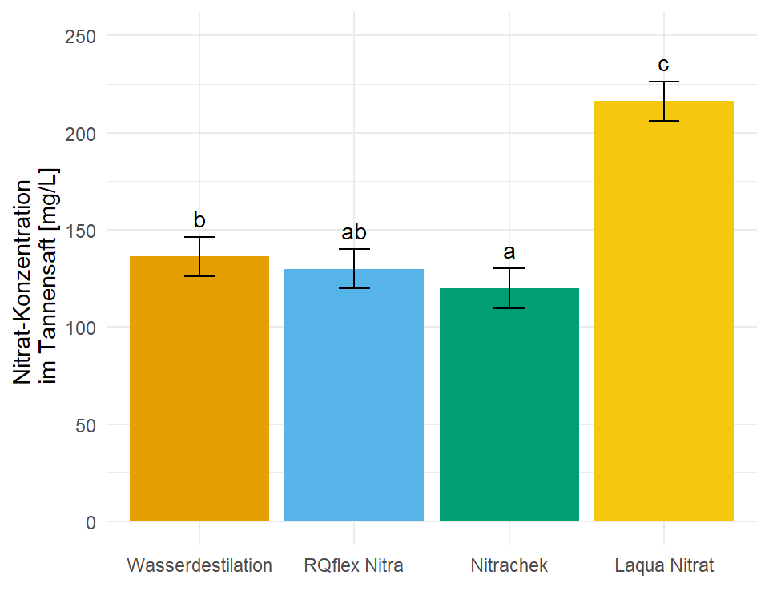
ggplot nachgebaut mit den Informationen aus der Funktion emmeans(). Das compact letter display wird dann über das geom_text() gesetzt.
ggplot(data = emmeans_hetrogen_gls_tbl, aes(x = trt, y = emmean, fill = trt)) +
theme_minimal() +
geom_bar(stat = "identity") +
geom_errorbar(aes(ymin = emmean-sd, ymax = emmean+sd),
width = 0.2) +
labs(x = "",
y = "Nitrat-Konzentration \n im Tannensaft [mg/L]") +
ylim(0, 250) +
theme(legend.position = "none") +
scale_fill_okabeito() +
geom_text(aes(label = .group, y = emmean + sd + 10))
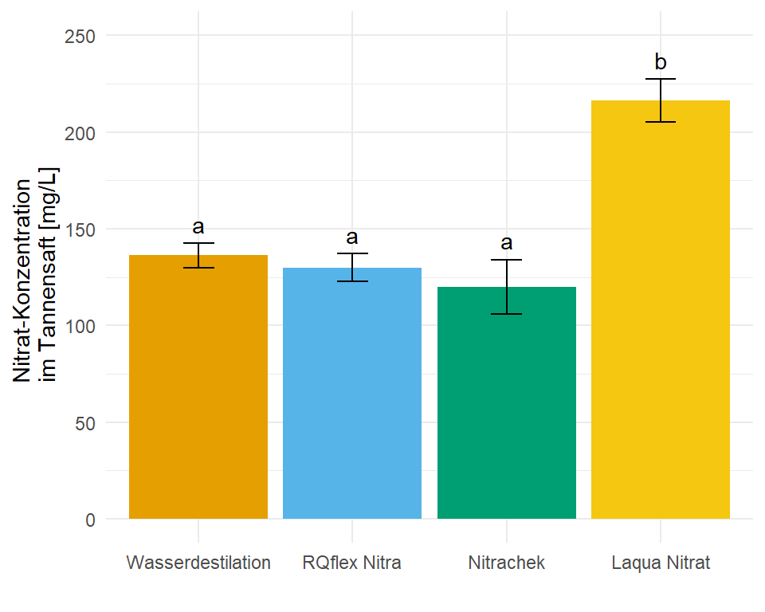
ggplot nachgebaut mit den Informationen aus der Funktion emmeans(). Das compact letter display wird dann über das geom_text() gesetzt. Die Varianzheterogenität nach der Funktion gls() im obigen Modell berücksichtigt.
ggplot(data = emmeans_hetrogen_vcov_tbl, aes(x = trt, y = emmean, fill = trt)) +
theme_minimal() +
geom_bar(stat = "identity") +
geom_errorbar(aes(ymin = emmean-sd, ymax = emmean+sd),
width = 0.2) +
labs(x = "",
y = "Nitrat-Konzentration \n im Tannensaft [mg/L]") +
ylim(0, 250) +
theme(legend.position = "none") +
scale_fill_okabeito() +
geom_text(aes(label = .group, y = emmean + sd + 10))
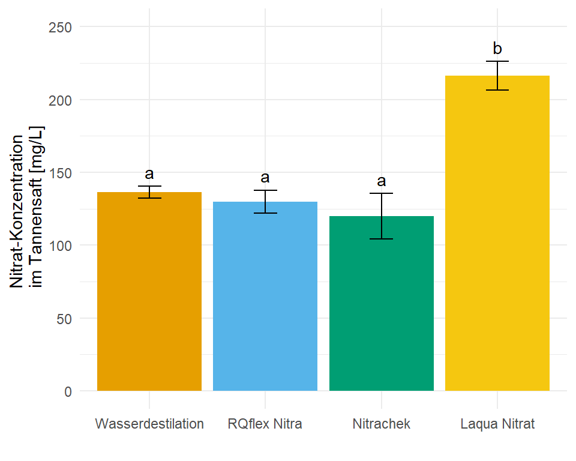
ggplot nachgebaut mit den Informationen aus der Funktion emmeans(). Das compact letter display wird dann über das geom_text() gesetzt. Die Varianzheterogenität nach der Funktion sandwich::vcovHAC im obigen Modell berücksichtigt.
Am Ende kannst du dann folgenden Code noch hinter deinen ggplot Code ausführen um dann deine Abbildung als *.png-Datei zu speichern. Dann hast du die Abbildung super nachgebaut und sie sieht auch wirklich besser aus.
ggsave("my_ggplot_barplot.png", width = 5, height = 3)
Zerforschen: Zweifaktorieller Barplot mit
lm() oder gls()
In diesem Zerforschenbeispiel wollen wir uns einen zweifaktoriellen Barplot anschauen. Wir haben hier ein Säulendiagramm mit compact letter display vorliegen. Daher brauchen wir eigentlich gar nicht so viele Zahlen. Für jede der vier Zeitpunkte und der Kontrolle jeweils einmal einen Mittelwert für die Höhe der Säule sowie einmal die Standardabweichung. Da wir hier aber noch mit emmeans() eine Gruppenvergleich rechnen wollen, brauchen wir mehr Beobachtungen. Wir erschaffen uns also fünf Beobachtungen je Zeit/Jod-Kombination. Für eine detaillierte Betrachtung der Erstellung der Abbildung schauen einmal in das Kapitel zum Barplot oder Balkendiagramm oder Säulendiagramm.

Als erstes brauchen wir die Daten. Die Daten habe ich mir in dem Datensatz zerforschen_barplot_2fac_target_emmeans.xlsx selber ausgedacht. Ich habe einfach die obige Abbildung genommen und den Mittelwert abgeschätzt. Dann habe ich die fünf Werte alle um den Mittelwert streuen lassen. Ich brauche hier eigentlich mehr als fünf Werte, sonst kriegen wir bei emmeans() und der Interaktion im gls()-Modell Probleme, aber da gibt es dann bei kleinen Fallzahlen noch ein Workaround. Bitte nicht mit weniger als fünf Beobachtungen versuchen, dann wird es schwierig mit der Konsistenz der Schätzer aus dem Modell.
Ach, und ganz wichtig. Wir entfernen die Kontrolle, da wir die Kontrolle nur mit einer Iodid-Stufe gemessen haben. Dann können wir weder die Interaktion rechnen, noch anständig eine Interpretation durchführen.
barplot_tbl <- read_excel("data/zerforschen_barplot_2fac_target_emmeans.xlsx") %>%
mutate(time = factor(time,
levels = c("ctrl", "7", "11", "15", "19"),
labels = c("Contr.", "07:00", "11:00", "15:00", "19:00")),
type = as_factor(type)) %>%
filter(time != "Contr.")
barplot_tbl # A tibble: 40 × 3
time type iodine
<fct> <fct> <dbl>
1 07:00 KIO3 50
2 07:00 KIO3 55
3 07:00 KIO3 60
4 07:00 KIO3 52
5 07:00 KIO3 62
6 07:00 KI 97
7 07:00 KI 90
8 07:00 KI 83
9 07:00 KI 81
10 07:00 KI 98
# ℹ 30 more rowsIm Folgenden sparen wir uns den Aufruf mit group_by() den du aus dem Kapitel zum Barplot schon kennst. Wir machen das alles zusammen in der Funktion emmeans() aus dem gleichnamigen R Paket. Der Vorteil ist, dass wir dann auch gleich die Gruppenvergleiche und auch das compact letter display erhalten. Einzig die Standardabweichung \(s\) wird uns nicht wiedergegeben sondern der Standardfehler \(SE\). Da aber folgernder Zusammenhang vorliegt, können wir gleich den Standardfehler in die Standardabweichung umrechnen.
\[ SE = \cfrac{s}{\sqrt{n}} \]
Wir rechnen also gleich einfach den Standardfehler \(SE\) mal der \(\sqrt{n}\) um dann die Standardabweichung zu erhalten. In unserem Fall ist \(n=5\) nämlich die Anzahl Beobachtungen je Gruppe. Wenn du mal etwas unterschiedliche Anzahlen hast, dann kannst du auch einfach den Mittelwert der Fallzahl der Gruppen nehmen. Da überfahren wir zwar einen statistischen Engel, aber der Genauigkeit ist genüge getan.
In den beiden Tabs siehst du jetzt einmal die Modellierung unter der Annahme der Varianzhomogenität mit der Funktion lm() und einmal die Modellierung unter der Annahme der Varianzheterogenität mit der Funktion gls() aus dem R Paket nlme. Wie immer lässt sich an Boxplots visuell überprüfen, ob wir Homogenität oder Heterogenität vorliegen haben. Oder aber du schaust nochmal in das Kapitel Der Pre-Test oder Vortest, wo du mehr erfährst.
Wenn du jeden Boxplot miteinander vergleichen willst, dann musst du in dem Code emmeans(~ time * type) setzen. Dann berechnet dir emmeans für jede Faktorkombination einen paarweisen Vergleich.
Hier gehen wir nicht weiter auf die Funktionen ein, bitte schaue dann einmal in dem Abschnitt zu Gruppenvergleich mit dem emmeans Paket. Wir entfernen aber noch die Leerzeichen bei den Buchstaben mit der Funktion str_trim(). Wir rechnen hier die Vergleiche getrennt für die beiden Jodformen. Wenn du alles mit allem Vergleichen willst, dann setze bitte emmeans(~ time * type).
emmeans_homogen_tbl <- lm(iodine ~ time + type + time:type, data = barplot_tbl) %>%
emmeans(~ time | type) %>%
cld(Letters = letters, adjust = "none") %>%
as_tibble() %>%
mutate(.group = str_trim(.group),
sd = SE * sqrt(5))
emmeans_homogen_tbl# A tibble: 8 × 9
time type emmean SE df lower.CL upper.CL .group sd
<fct> <fct> <dbl> <dbl> <dbl> <dbl> <dbl> <chr> <dbl>
1 07:00 KIO3 55.8 5.58 32 44.4 67.2 a 12.5
2 11:00 KIO3 75.2 5.58 32 63.8 86.6 b 12.5
3 15:00 KIO3 81 5.58 32 69.6 92.4 b 12.5
4 19:00 KIO3 84.2 5.58 32 72.8 95.6 b 12.5
5 07:00 KI 89.8 5.58 32 78.4 101. a 12.5
6 19:00 KI 90 5.58 32 78.6 101. a 12.5
7 15:00 KI 124 5.58 32 113. 135. b 12.5
8 11:00 KI 152 5.58 32 141. 163. c 12.5In dem Objekt emmeans_homogen_tbl ist jetzt alles enthalten für unsere Barplots mit dem compact letter display. Wie dir vielleicht auffällt sind alle Standardfehler und damit alle Standardabweichungen für alle Gruppen gleich, das war ja auch unsere Annahme mit der Varianzhomogenität.
Hier gehen wir nicht weiter auf die Funktionen ein, bitte schaue dann einmal in dem Abschnitt zu Gruppenvergleich mit dem emmeans Paket. Wir entfernen aber noch die Leerzeichen bei den Buchstaben mit der Funktion str_trim(). Da wir hier etwas Probleme mit der Fallzahl haben, nutzen wir die Option mode = "appx-satterthwaite" um dennoch ein vollwertiges, angepasstes Modell zu erhalten. Du kannst die Option auch erstmal entfernen und schauen, ob es mit deinen Daten auch so klappt. Wir rechnen hier die Vergleiche getrennt für die beiden Jodformen. Wenn du alles mit allem Vergleichen willst, dann setze bitte emmeans(~ time * type).
emmeans_hetrogen_tbl <- gls(iodine ~ time + type + time:type, data = barplot_tbl,
weights = varIdent(form = ~ 1 | time*type)) %>%
emmeans(~ time | type, mode = "appx-satterthwaite") %>%
cld(Letters = letters, adjust = "none") %>%
as_tibble() %>%
mutate(.group = str_trim(.group),
sd = SE * sqrt(5))
emmeans_hetrogen_tbl# A tibble: 8 × 9
time type emmean SE df lower.CL upper.CL .group sd
<fct> <fct> <dbl> <dbl> <dbl> <dbl> <dbl> <chr> <dbl>
1 07:00 KIO3 55.8 2.29 4.09 49.5 62.1 a 5.12
2 11:00 KIO3 75.2 1.50 3.97 71.0 79.4 b 3.35
3 15:00 KIO3 81 3.30 3.99 71.8 90.2 b 7.38
4 19:00 KIO3 84.2 7.88 3.99 62.3 106. b 17.6
5 07:00 KI 89.8 3.48 3.98 80.1 99.5 a 7.79
6 19:00 KI 90 4.31 3.97 78.0 102. a 9.64
7 15:00 KI 124 7.48 4.00 103. 145. b 16.7
8 11:00 KI 152 9.03 4.02 127. 177. c 20.2 In dem Objekt emmeans_hetrogen_tbl ist jetzt alles enthalten für unsere Barplots mit dem compact letter display. In diesem Fall hier sind die Standardfehler und damit auch die Standardabweichungen nicht alle gleich, wir haben ja für jede Gruppe eine eigene Standardabweichung angenommen. Die Varianzen sollten ja auch heterogen sein.
Dann bauen wir usn auch schon die Abbildung. Wir müssen am Anfang einmal scale_x_discrete() setzen, damit wir gleich den Zielbereich ganz hinten zeichnen können. Sonst ist der blaue Bereich im Vordergrund. Dann färben wir auch mal die Balken anders ein. Muss ja auch mal sein. Auch nutzen wir die Funktion geom_text() um das compact letter display gut zu setzten. Die \(y\)-Position berechnet sich aus dem Mittelwert emmean plus Standardabweichung sd innerhalb des geom_text(). Da wir hier die Kontrollgruppe entfernen mussten, habe ich dann nochmal den Zielbereich verschoben und mit einem Pfeil ergänzt. Die beiden Tabs zeigen dir dann die Abbildungen für die beiden Annahmen der Varianzhomogenität oder Varianzheterogenität. Der Code ist der gleiche für beide Abbildungen, die Daten emmeans_homogen_tbl oder emmeans_hetrogen_tbl sind das Ausschlaggebende. Wie du sehen wirst, haben wir hier mal keinen Unterschied vorliegen.
ggplot(data = emmeans_homogen_tbl, aes(x = time, y = emmean, fill = type)) +
theme_minimal() +
scale_x_discrete() +
annotate("rect", xmin = 0.25, xmax = 4.75, ymin = 50, ymax = 100,
alpha = 0.2, fill = "darkblue") +
annotate("text", x = 0.5, y = 120, hjust = "left", label = "Target area",
size = 5) +
geom_curve(aes(x = 1.25, y = 120, xend = 1.7, yend = 105),
colour = "#555555",
size = 0.5,
curvature = -0.2,
arrow = arrow(length = unit(0.03, "npc"))) +
geom_bar(stat = "identity",
position = position_dodge(width = 0.9, preserve = "single")) +
geom_errorbar(aes(ymin = emmean-sd, ymax = emmean+sd),
width = 0.2,
position = position_dodge(width = 0.9, preserve = "single")) +
scale_fill_manual(name = "Type", values = c("darkgreen", "darkblue")) +
theme(legend.position = c(0.1, 0.8),
legend.title = element_blank(),
legend.spacing.y = unit(0, "mm"),
panel.border = element_rect(colour = "black", fill=NA),
axis.text = element_text(colour = 1, size = 12),
legend.background = element_blank(),
legend.box.background = element_rect(colour = "black")) +
labs(x = "Time of application [time of day]",
y = expression(Iodine~content~"["*mu*g~I~100*g^'-1'~f*.*m*.*"]")) +
scale_y_continuous(breaks = c(0, 50, 100, 150, 200),
limits = c(0, 200)) +
geom_text(aes(label = .group, y = emmean + sd + 2),
position = position_dodge(width = 0.9), vjust = -0.25)
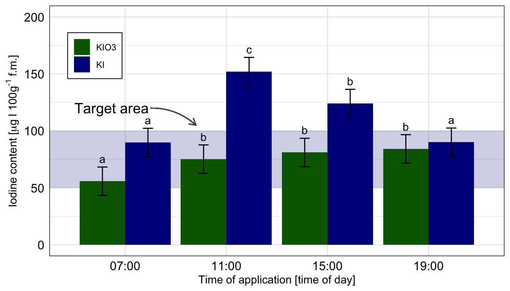
ggplot nachgebaut. Wir nutzen das geom_text() um noch besser unser compact letter display zu setzen. Die Kontrolle wurde entfernt, sonst hätten wir hier nicht emmeans in der einfachen Form nutzen können. Wir rechnen hier die Vergleiche getrennt für die beiden Jodformen.
ggplot(data = emmeans_hetrogen_tbl, aes(x = time, y = emmean, fill = type)) +
theme_minimal() +
scale_x_discrete() +
annotate("rect", xmin = 0.25, xmax = 4.75, ymin = 50, ymax = 100,
alpha = 0.2, fill = "darkblue") +
annotate("text", x = 0.5, y = 120, hjust = "left", label = "Target area",
size = 5) +
geom_curve(aes(x = 1.25, y = 120, xend = 1.7, yend = 105),
colour = "#555555",
size = 0.5,
curvature = -0.2,
arrow = arrow(length = unit(0.03, "npc"))) +
geom_bar(stat = "identity",
position = position_dodge(width = 0.9, preserve = "single")) +
geom_errorbar(aes(ymin = emmean-sd, ymax = emmean+sd),
width = 0.2,
position = position_dodge(width = 0.9, preserve = "single")) +
scale_fill_manual(name = "Type", values = c("darkgreen", "darkblue")) +
theme(legend.position = c(0.1, 0.8),
legend.title = element_blank(),
legend.spacing.y = unit(0, "mm"),
panel.border = element_rect(colour = "black", fill=NA),
axis.text = element_text(colour = 1, size = 12),
legend.background = element_blank(),
legend.box.background = element_rect(colour = "black")) +
labs(x = "Time of application [time of day]",
y = expression(Iodine~content~"["*mu*g~I~100*g^'-1'~f*.*m*.*"]")) +
scale_y_continuous(breaks = c(0, 50, 100, 150, 200),
limits = c(0, 200)) +
geom_text(aes(label = .group, y = emmean + sd + 2),
position = position_dodge(width = 0.9), vjust = -0.25)
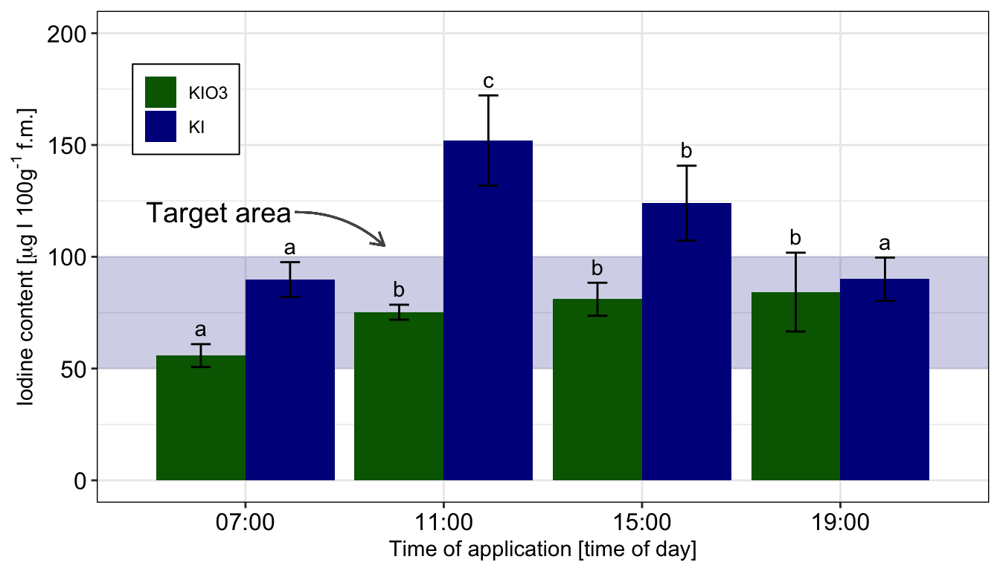
ggplot nachgebaut. Wir nutzen das geom_text() um noch besser unser compact letter display zu setzen. Die Kontrolle wurde entfernt, sonst hätten wir hier nicht emmeans in der einfachen Form nutzen können. Wir rechnen hier die Vergleiche getrennt für die beiden Jodformen.
Am Ende kannst du dann folgenden Code noch hinter deinen ggplot Code ausführen um dann deine Abbildung als *.png-Datei zu speichern. Dann hast du die Abbildung super nachgebaut und sie sieht auch wirklich besser aus.
ggsave("my_ggplot_barplot.png", width = 5, height = 3)
Zerforschen: Zweifaktorieller Boxplot mit
rq()
In diesem Zerforschenbeispiel wollen wir uns einen zweifaktoriellen Boxplot unter der Annahme nicht normalverteilter Daten anschauen. Dabei ist Iodanteil in den Pflanzen nicht normalverteilt, so dass wir hier eine Quantilesregression rechnen wollen. Die Daten siehst du wieder in der unteren Abbildung. Ich nehme für jede der vier Zeitpunkte jeweils fünf Beobachtungen an. Für die Kontrolle haben wir dann nur drei Beobachtungen in der Gruppe \(KIO_3\) vorliegen. Das ist wichtig, denn sonst können wir nicht mit emmeans rechnen. Wir haben einfach zu wenige Beobachtungen vorliegen.
Als erstes brauchen wir die Daten. Die Daten habe ich mir in dem Datensatz zerforschen_barplot_2fac_target_emmeans.xlsx selber ausgedacht. Ich nehme hier die gleichen Daten wie für den Barplot. Ich habe einfach die obige Abbildung genommen und den Mittelwert abgeschätzt. Dann habe ich die fünf Werte alle um den Mittelwert streuen lassen. Ich brauche hier eigentlich mehr als fünf Werte, sonst kriegen wir bei emmeans() und der Interaktion im gls()-Modell Probleme, aber da gibt es dann bei kleinen Fallzahlen noch ein Workaround. Bitte nicht mit weniger als fünf Beobachtungen versuchen, dann wird es schwierig mit der Konsistenz der Schätzer aus dem Modell.
Ach, und ganz wichtig. Wir entfernen die Kontrolle, da wir die Kontrolle nur mit einer Iodid-Stufe gemessen haben. Dann können wir weder die Interaktion rechnen, noch anständig eine Interpretation durchführen.
boxplot_tbl <- read_excel("data/zerforschen_barplot_2fac_target_emmeans.xlsx") %>%
mutate(time = factor(time,
levels = c("ctrl", "7", "11", "15", "19"),
labels = c("Contr.", "07:00", "11:00", "15:00", "19:00")),
type = as_factor(type)) %>%
filter(time != "Contr.")
boxplot_tbl # A tibble: 40 × 3
time type iodine
<fct> <fct> <dbl>
1 07:00 KIO3 50
2 07:00 KIO3 55
3 07:00 KIO3 60
4 07:00 KIO3 52
5 07:00 KIO3 62
6 07:00 KI 97
7 07:00 KI 90
8 07:00 KI 83
9 07:00 KI 81
10 07:00 KI 98
# ℹ 30 more rowsHier gehen wir nicht weiter auf die Funktionen ein, bitte schaue dann einmal in dem Abschnitt zu Gruppenvergleich mit dem emmeans Paket. Wir entfernen aber noch die Leerzeichen bei den Buchstaben mit der Funktion str_trim(). Wichtig ist hier, dass wir zur Modellierung die Funktion rq() aus dem R Paket quantreg nutzen. Wenn du den Aufbau mit den anderen Zerforschenbeispielen vergleichst, siehst du, dass hier viel ähnlich ist. Achtung, ganz wichtig! Du musst am Ende wieder die Ausgabe aus der cld()-Funktion nach der Zeit time und der Form type sortieren, sonst passt es gleich nicht mit den Beschriftungen der Boxplots.
Du musst dich nur noch entscheiden, ob du das compact letter display getrennt für die beiden Jodformen type berechnen willst oder aber zusammen. Wenn du das compact letter display für die beiden Jodformen zusammen berechnest, dann berechnest du für jede Faktorkombination einen paarweisen Vergleich.
Hier rechnen wir den Vergleich nur innerhalb der jeweiligen Jodform type. Daher vergleichen wir die Boxplots nicht untereinander sondern eben nur in den jeweiligen Leveln \(KIO_3\) und \(KI\).
emmeans_quant_sep_tbl <- rq(iodine ~ time + type + time:type, data = boxplot_tbl, tau = 0.5) %>%
emmeans(~ time | type) %>%
cld(Letters = letters, adjust = "none") %>%
as_tibble() %>%
mutate(.group = str_trim(.group)) %>%
arrange(time, type)
emmeans_quant_sep_tbl# A tibble: 8 × 8
time type emmean SE df lower.CL upper.CL .group
<fct> <fct> <dbl> <dbl> <dbl> <dbl> <dbl> <chr>
1 07:00 KIO3 55 3.15 32 48.6 61.4 a
2 07:00 KI 90 5.51 32 78.8 101. a
3 11:00 KIO3 75 1.97 32 71.0 79.0 b
4 11:00 KI 150 13.8 32 122. 178. b
5 15:00 KIO3 80 4.72 32 70.4 89.6 b
6 15:00 KI 120 7.87 32 104. 136. b
7 19:00 KIO3 85 7.48 32 69.8 100. b
8 19:00 KI 90 2.36 32 85.2 94.8 a Dann einmal die Berechnung über alle Boxplots und damit allen Faktorkombinationen aus Zeit und Jodform. Wir können dann damit jeden Boxplot mit jedem anderen Boxplot vergleichen.
emmeans_quant_comb_tbl <- rq(iodine ~ time + type + time:type, data = boxplot_tbl, tau = 0.5) %>%
emmeans(~ time*type) %>%
cld(Letters = letters, adjust = "none") %>%
as_tibble() %>%
mutate(.group = str_trim(.group)) %>%
arrange(time, type)
emmeans_quant_comb_tbl# A tibble: 8 × 8
time type emmean SE df lower.CL upper.CL .group
<fct> <fct> <dbl> <dbl> <dbl> <dbl> <dbl> <chr>
1 07:00 KIO3 55 3.15 32 48.6 61.4 a
2 07:00 KI 90 5.51 32 78.8 101. c
3 11:00 KIO3 75 1.97 32 71.0 79.0 b
4 11:00 KI 150 13.8 32 122. 178. d
5 15:00 KIO3 80 4.72 32 70.4 89.6 bc
6 15:00 KI 120 7.87 32 104. 136. d
7 19:00 KIO3 85 7.48 32 69.8 100. bc
8 19:00 KI 90 2.36 32 85.2 94.8 c Für die Boxplots brauchen wir dann noch ein Objekt mehr. Um das nach den Faktorkombinationen sortierte compacte letter dislay an die richtige Position zu setzen brauchen wir noch eine \(y\)-Position. Ich nehme hier dann das 95% Quantile. Das 95% Quantile sollte dann auf jeden Fall über die Schnurrhaare raus reichen. Wir nutzen dann den Datensatz letter_pos_tbl in dem geom_text() um die Buchstaben richtig zu setzen.
letter_pos_tbl <- boxplot_tbl %>%
group_by(time, type) %>%
summarise(quant_90 = quantile(iodine, probs = c(0.95)))
letter_pos_tbl# A tibble: 8 × 3
# Groups: time [4]
time type quant_90
<fct> <fct> <dbl>
1 07:00 KIO3 61.6
2 07:00 KI 97.8
3 11:00 KIO3 78.8
4 11:00 KI 174
5 15:00 KIO3 89.4
6 15:00 KI 146
7 19:00 KIO3 106
8 19:00 KI 99.8Das Problem sind natürlich die wenigen Beobachtungen, deshalb sehen die Boxplots teilweise etwas wild aus. Aber wir wollen hier eben die Mediane darstellen, die wir dann auch in der Quantilesregression berechnet haben. Wenn du mehr Beobachtungen erstellst, dann werden die Boxplots auch besser dargestellt.
Hier nehmen wir das compact letter display aus dem Objekt emmeans_quant_sep_tbl. Wichtig ist, dass die Sortierung gleich der Beschriftung der \(x\)-Achse ist. Deshalb nutzen wir weiter oben auch die Funktion arrange() zur Sortierung der Buchstaben. Beachte, dass wir hier jeweils die beiden Jodformen getrennt voneinander betrachten.
ggplot(data = boxplot_tbl, aes(x = time, y = iodine,
fill = type)) +
theme_minimal() +
scale_x_discrete() +
annotate("rect", xmin = 0.25, xmax = 4.75, ymin = 50, ymax = 100,
alpha = 0.2, fill = "darkblue") +
annotate("text", x = 0.5, y = 120, hjust = "left", label = "Target area") +
geom_curve(aes(x = 1.1, y = 120, xend = 1.7, yend = 105),
colour = "#555555",
size = 0.5,
curvature = -0.2,
arrow = arrow(length = unit(0.03, "npc"))) +
geom_boxplot(position = position_dodge(width = 0.9, preserve = "single")) +
scale_fill_manual(name = "Type", values = c("darkgreen", "darkblue")) +
theme(legend.position = c(0.1, 0.8),
legend.title = element_blank(),
legend.spacing.y = unit(0, "mm"),
panel.border = element_rect(colour = "black", fill=NA),
axis.text = element_text(colour = 1, size = 12),
legend.background = element_blank(),
legend.box.background = element_rect(colour = "black")) +
labs(x = "Time of application [time of day]",
y = expression(Iodine~content~"["*mu*g~I~100*g^'-1'~f*.*m*.*"]")) +
scale_y_continuous(breaks = c(0, 50, 100, 150, 200),
limits = c(0, 200)) +
geom_text(data = letter_pos_tbl,
aes(label = emmeans_quant_sep_tbl$.group,
y = quant_90 + 5),
position = position_dodge(width = 0.9), vjust = -0.25)
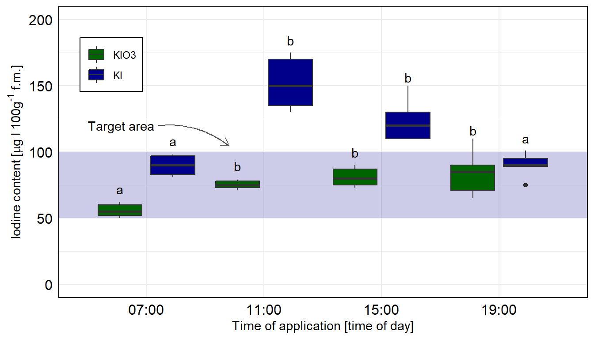
ggplot als Boxplot nachgebaut. Wir nutzen das geom_text() um noch besser unser compact letter display zu setzen, dafür müssen wir uns aber nochmal ein Positionsdatensatz bauen. Hier ist das compact letter display getrennt für die beiden Jodformen berechnet.
Und hier nutzen wir das compact letter display aus dem Objekt emmeans_quant_comb_tbl. Wichtig ist, dass die Sortierung gleich der Beschriftung der \(x\)-Achse ist. Deshalb nutzen wir weiter oben auch die Funktion arrange() zur Sortierung der Buchstaben. Hier betrachten wir jeden Boxplot einzelne und du kannst auch jeden Boxplot mit jedem Boxplot vergleichen.
ggplot(data = boxplot_tbl, aes(x = time, y = iodine,
fill = type)) +
theme_minimal() +
scale_x_discrete() +
annotate("rect", xmin = 0.25, xmax = 4.75, ymin = 50, ymax = 100,
alpha = 0.2, fill = "darkblue") +
annotate("text", x = 0.5, y = 120, hjust = "left", label = "Target area") +
geom_curve(aes(x = 1.1, y = 120, xend = 1.7, yend = 105),
colour = "#555555",
size = 0.5,
curvature = -0.2,
arrow = arrow(length = unit(0.03, "npc"))) +
geom_boxplot(position = position_dodge(width = 0.9, preserve = "single")) +
scale_fill_manual(name = "Type", values = c("darkgreen", "darkblue")) +
theme(legend.position = c(0.1, 0.8),
legend.title = element_blank(),
legend.spacing.y = unit(0, "mm"),
panel.border = element_rect(colour = "black", fill=NA),
axis.text = element_text(colour = 1, size = 12),
legend.background = element_blank(),
legend.box.background = element_rect(colour = "black")) +
labs(x = "Time of application [time of day]",
y = expression(Iodine~content~"["*mu*g~I~100*g^'-1'~f*.*m*.*"]")) +
scale_y_continuous(breaks = c(0, 50, 100, 150, 200),
limits = c(0, 200)) +
geom_text(data = letter_pos_tbl,
aes(label = emmeans_quant_comb_tbl$.group,
y = quant_90 + 5),
position = position_dodge(width = 0.9), vjust = -0.25) 
ggplot als Boxplot nachgebaut. Wir nutzen das geom_text() um noch besser unser compact letter display zu setzen, dafür müssen wir uns aber nochmal ein Positionsdatensatz bauen. Hier ist das compact letter display für jede einzelne Faktorkombination berechnet.
Am Ende kannst du dann folgenden Code noch hinter deinen ggplot Code ausführen um dann deine Abbildung als *.png-Datei zu speichern. Dann hast du die Abbildung super nachgebaut und sie sieht auch wirklich besser aus.
ggsave("my_ggplot_boxplot.png", width = 5, height = 3)Bei einem nicht-normalverteilten Outcome mit Varianzheterogenität über die Gruppen müssen wir nochmal gemeinsam in die Daten schauen. Da meldest du dich bitte nochmal bei mir in der statistischen Beratung. Hier öffnet sich nämlich eine Tür in eine ganz eigene Modellwelt und je nach wissenschaftlicher Fragestellung können wir dann eine Lösung finden.
Exkurs: Robuste Schätzung von Standardfehlern, Konfidenzintervallen und p-Werten
Wenn du noch etwas weiter gehen möchtest, dann kannst du dir noch die Hilfeseite von dem R Paket {performance} Robust Estimation of Standard Errors, Confidence Intervals, and p-values anschauen. Die Idee ist hier, dass wir die Varianz/Kovarianz robuster daher mit der Berücksichtigung von Varianzheterogenität (eng. heteroskedasticity) schätzen.
22.3 Pre-Test auf Varianzhomogenität
Was will also der Pre-Test auf Varianzhomogenität? Eigentlich ist der Test vollkommen verquer. Zum einen testet der Test auf Varianzhomogenität gar nicht die Anwesenheit von Homogenität. Wir können dank dem Falisifikationsprinzip nur Ablehnen. Deshalb steht in der Nullhypothese die Gleichheit der Varianzen, also Varianzhomogenität und in der Alternativen dann die Varianzheterogenität, als der Unterschied.
Ab wann sollten wir denn die Varianzhomogenität ablehnen? Wenn wir standardmäßig auf 5% testen, dann werden wir zu selten die Varianzhomogenität ablehnen. Daher ist es ratsam in diesem Fall auf ein Signifikanzniveau von \(\alpha\) gleich 20% zu testen. Aber auch in diesem Fall können wir natürlich eine Varianzhomogenität übersehen oder aber eine Varianzheterogenität fälschlicherweise annehmen.
Einigermaßen zuverlässig meint, dass wir dann in 1 von 20 Fällen eine Varianzhomogenität ablehnen, obwohl eine Varianzhomogenität vorliegt. Ebenso können wir in 1 von 5 Fällen die Nullhypothese nicht ablehnen, obwohl die Varianzen heterogen sind (siehe auch Kapitel 20.1).
Es ergeben sich folgende Hypothesen für den Pre-Test auf Varianzhomogenität.
\[ \begin{aligned} H_0: &\; s^2_A = s^2_B\\ H_A: &\; s^2_A \ne s^2_B\\ \end{aligned} \]
Wir sehen, dass in der Nullhypothese die Gleichheit der Varianzen steht und in der Alternativehypothese der Unterschied, also die Varianzhterogenität.
Entscheidung zur Varianzhomogenität
Bei der Entscheidung zur Varianzhomogenität gilt folgende Regel. Ist der \(p\)-Wert des Pre-Tests auf Varianzhomogenität kleiner als das Signifikanzniveau \(\alpha\) von 20% lehnen wir die Nullhypothese ab. Wir nehmen Varianzheterogenität an.
- Ist \(p \leq \alpha = 20\%\) so nehmen wir Varianzheterogenität an.
- Ist \(p > \alpha = 20\%\) so nehmen wir Varianzhomogenität an.
Auf jeden Fall sollten wir das Ergebnis unseres Pre-Tests auf Varianzhomogenität nochmal visuell bestätigen.
Wir nutzen zum statistischen Testen den Levene-Test über die Funktion leveneTest() oder den Bartlett-Test über die Funktion bartlett.test(). Beide Tests sind in R implementiert und können über das Paket {car} genutzte werden. Wir werden uns jetzt nicht die Formel anschauen, wir nutzen wenn die beiden Tests nur in R und rechnen nicht selber die Werte nach.
Einfach ausgedrückt, überprüft der Bartlett-Test die Homogenität der Varianzen auf der Grundlage des Mittelwerts. Dementsprechend ist der Bartlett-Test empfindlicher gegen eine Abweichung von der Normalverteilung der Daten, die er überprüfen soll. Der Levene-Test überprüft die Homogenität der Varianzen auch auf der Grundlage des Mittelwerts. Wir haben aber auch die Wahl, den Median zu nutzen dann ist der Levene-Test robuster gegenüber Ausreißern.
Im Folgenden wollen wir uns einmal in der Theorie den Levene-Test anschauen. Der Levene-Test ist eigentlich nichts anderes als eine etwas versteckte einfaktorielle ANOVA, aber dazu dann am Ende mehr. Dafür nutzen wir als erstes die folgende Formel um die Teststatistik zu berechnen. Dabei ist \(W\) die Teststatistik, die wir zu einer \(F\)-Verteilung, die wir schon aus der ANOVA kennen, vergleichen können.
\[ W = \frac{(N-k)}{(k-1)} \cdot \frac{\sum_{i=1}^k N_i (\bar{Z}_{i\cdot}-\bar{Z}_{\cdot\cdot})^2} {\sum_{i=1}^k \sum_{j=1}^{N_i} (Z_{ij}-\bar{Z}_{i\cdot})^2} \]
Zur Veranschaulichung bauen wir uns einen simplen Datensatz mit \(N = 14\) Beobachtungen für \(k = 2\) Tierarten mit Hunden und Katzen. Damit hat jede Tierart \(7\) Beobachtungen der Sprunglängen der jeweiligen Hunde- und Katzenflöhe.
animal_tbl <- tibble(dog = c(5.7, 8.9, 11.8, 8.2, 5.6, 9.1, 7.6),
cat = c(3.2, 2.2, 5.4, 4.1, 1.1, 7.9, 8.6))
animal_tbl# A tibble: 7 × 2
dog cat
<dbl> <dbl>
1 5.7 3.2
2 8.9 2.2
3 11.8 5.4
4 8.2 4.1
5 5.6 1.1
6 9.1 7.9
7 7.6 8.6Dann berechnen wir uns auch gleich die absoluten Abstände \(Z_{ij}\) von jeder Beobachtung zu den jeweiligen Mittelwerten der Gruppe. Wir könnten auch die Abstände zu den jeweiligen Medianen der Gruppe berechnen. Beides ist möglich. Hier sehen wir auch den Unterschied zu der ANOVA, wir berechnen hier nicht die quadratischen Abstände sondern die absoluten Abstände.
z_tbl <- animal_tbl %>%
mutate(dog_abs = abs(dog - mean(dog)),
cat_abs = abs(cat - mean(cat)))
z_tbl# A tibble: 7 × 4
dog cat dog_abs cat_abs
<dbl> <dbl> <dbl> <dbl>
1 5.7 3.2 2.43 1.44
2 8.9 2.2 0.771 2.44
3 11.8 5.4 3.67 0.757
4 8.2 4.1 0.0714 0.543
5 5.6 1.1 2.53 3.54
6 9.1 7.9 0.971 3.26
7 7.6 8.6 0.529 3.96 Im Folgenden nochmal in formelschreibweise der Unterschied zwischen den beiden Abstandsberechnungen \(Z_{ij}\) für jeden Wert. Wir haben die Wahl zwischen den Abständen von jeder Beobachtung zu dem Mittelwert oder dem Median.
\[ Z_{ij} = \begin{cases} |Y_{ij} - \bar{Y}_{i\cdot}|, & \bar{Y}_{i\cdot} \text{ ist der Mittelwert der } i\text{-ten Gruppe}, \\ |Y_{ij} - \tilde{Y}_{i\cdot}|, & \tilde{Y}_{i\cdot} \text{ ist der Median der } i\text{-ten Gruppe}. \end{cases} \]
Berechnen wir nun die Gruppenmittelwerte \(\bar{Z}_{i\cdot}\) für die Hunde und die Katzen jeweils einmal separat.
mean(z_tbl$dog_abs)[1] 1.567347mean(z_tbl$cat_abs)[1] 2.277551Dann brauchen wir noch den Mittelwert über alle Beobachtungen hinweg \(\bar{Z}_{\cdot\cdot}\). Den können wir aus allen Beoachtungen berechnen oder aber einfach den Mittelwert der beiden Gruppenmittelwerte nehmen.
(1.57 + 2.28)/2[1] 1.925Am Ende fehlt uns dann noch der Nenner mit der Summe der einzelnen quadratischen Abstände \(Z_{ij}\) zu den Abstandsmitteln der einzelnen Gruppen \(\bar{Z}_{i\cdot}\) mit \(\sum_{i=1}^k \sum_{j=1}^{N_i} (Z_{ij}-\bar{Z}_{i\cdot})^2\). Den Wert können wir dann in R direkt einmal berechnen. Wir nehmen also die Vektoren der Einzelwerte und ziehen dort immer den Mittelwert der Abstände der Gruppe ab. Abschließend summieren wir dann einmal auf.
sum((z_tbl$dog_abs - 1.57)^2)[1] 10.3983sum((z_tbl$cat_abs - 2.28)^2)[1] 11.42651Wir können dann alle Zahlen einmal zusammenbringen und in die Formel des Levene-Test einsetzen. Nun rechen wir dann wieder die quadratischen Abstände auf den absoluten Abständen. Ja, das ist etwas wirr, wenn man es zum ersten Mal liest.
\[ W = \cfrac{14-2}{2-1}\cdot \cfrac{7 \cdot (1.57 - 1.93)^2 + 7 \cdot (2.28 - 1.93)^2} {10.39 + 11.43} = \cfrac{12}{1} \cdot \cfrac{1.76}{21.82} = \cfrac{21.12}{21.82} \approx 0.968 \]
Wir erhalten ein \(W = 0.968\), was wir direkt als eine F-Statistik interpretieren können. Schauen wir uns das Ergebnis einmal in der R Funktion leveneTest() aus dem R Paket {car} an. Wir brauchen dafür einmal die Werte für die Sprungweiten und müssen dann die Daten in das long-Format umbauen und dann rechnen wir den Levene-Test. Wir erhalten fast die numerisch gleichen Werte. Bei uns haben wir etwas gerundet und dann kommt die Abweichung zustande.
z_tbl %>%
select(dog, cat) %>%
gather(key = animal, value = jump_length) %$%
leveneTest(jump_length ~ animal, center = "mean")Levene's Test for Homogeneity of Variance (center = "mean")
Df F value Pr(>F)
group 1 0.9707 0.344
12 Der Levene-Test ist eigentlich nichts anderes als eine einfaktorielle ANOVA auf den absoluten Abständen von den einzelnen Werten zu dem Mittelwert oder dem Median. Das können wir hier einmal nachvollziehen indem wir auf den absoluten Werten einmal eine einfaktorielle ANOVA in R rechnen. Wir erhalten den gleichen F-Wert in beiden Fällen. Eigentlich ist die ANOVA sogar etwas genauer, da wir hier auch die Sum of squares wie auch Mean squares erhalten.
z_tbl %>%
select(dog_abs, cat_abs) %>%
gather(key = animal, value = jump_length) %$%
lm(jump_length ~ animal) %>%
anova()Analysis of Variance Table
Response: jump_length
Df Sum Sq Mean Sq F value Pr(>F)
animal 1 1.7654 1.7654 0.9707 0.344
Residuals 12 21.8247 1.8187 Wir wollen uns nun im Folgenden nun zwei Fälle einmal näher anschauen. Zum einen den Fall, dass wir eine niedrige Fallzahl vorliegen haben und Varianzhomogenität sowie den Fall, dass wir eine niedrige Fallzahl und Varianzheterogenität vorliegen haben. Den Fall, dass wir hohe Fallzahl vorliegen haben, betrachten wir jetzt nicht weiter. In dem Fall funktionieren die Tests einigermaßen zuverlässig.
22.3.1 Varianzen sind homogen, Fallzahl niedrig
Wir bauen uns nun einen Datensatz mit zwei Gruppen \(A\) und \(B\) zu je zehn Beobachtungen. Beide Gruppen kommen aus einer Normalverteilung mit einem Mittelwert von \(\bar{y}_A = \bar{y}_A = 10\). Darüber hinaus haben wir Varianzhomogenität mit \(s_A = s_B = 5\) vorliegen. Ja, wir spezifizieren hier in der Funktion rnorm() die Standardabweichung, aber eine homogene Standardabweichung bedingt eine homogene Varianz und umgekehrt. Abschließend verwandeln wir das Wide-Format noch in das Long-Format um.
set.seed(202209013)
small_homogen_tbl <- tibble(A = rnorm(n = 10, mean = 10, sd = 5),
B = rnorm(n = 10, mean = 10, sd = 5)) %>%
gather(trt, rsp) %>%
mutate(trt = as_factor(trt))In der Abbildung 22.12 sehen wir die Daten aus dem small_homogen_tbl einmal als Boxplot visualisiert.
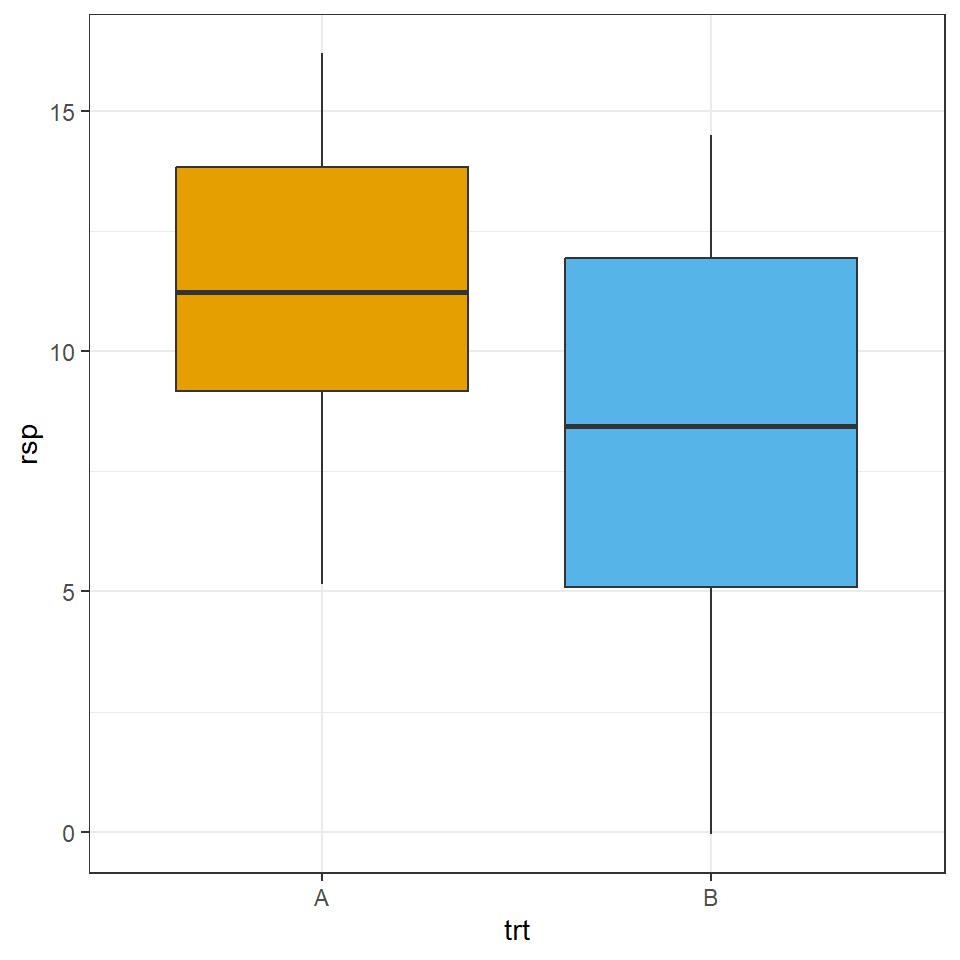
Wir wollen nun die Varianz auf Homogenität testen. Wir nutzen dafür den leveneTest() sowie den bartlett.test(). Beide Tests bieten sich an. Die Daumenregel ist, dass der Bartlett-Test etwas bessere statistische Eigenschaften hat. Dennoch ist der Levene-Test bekannter und wird häufiger angefragt und genutzt. Wir nutzen die Funktion tidy() aus dem Paket {broom} um die Ausgabe aufzuräumen und selektieren nur den \(p\)-Wert.
leveneTest(rsp ~ trt, data = small_homogen_tbl) %>%
tidy %>%
select(p.value)# A tibble: 1 × 1
p.value
<dbl>
1 0.345bartlett.test(rsp ~ trt, data = small_homogen_tbl) %>%
tidy %>%
select(p.value)# A tibble: 1 × 1
p.value
<dbl>
1 0.325Wir sehen, dass der \(p\)-Wert größer ist als das Signifikanzniveau \(\alpha\) von 20%. Damit können wir die Nullhypothese nicht ablehnen. Wir nehmen Varianzhomogenität an. Überdies sehen wir auch, dass sich die \(p\)-Werte nicht groß voneinander unterscheiden.
Wir können auch die Funktion check_homogeneity() aus dem Paket {performance} nutzen. Wir erhalten hier auch gleich eine Entscheidung in englischer Sprache ausgegeben. Die Funktion check_homogeneity() nutzt den Bartlett-Test. Wir können in Funktion auch andere Methoden mit method = c("bartlett", "fligner", "levene", "auto") wählen.
lm(rsp ~ trt, data = small_homogen_tbl) %>%
check_homogeneity()OK: There is not clear evidence for different variances across groups (Bartlett Test, p = 0.325).Wir nutzen das Paket {performance} für die Modellgüte im Kapitel 39.
22.3.2 Varianzen sind heterogen, Fallzahl niedrig
Nun stellt sich die Frage, wie sieht es aus, wenn wir ungleiche Varianzen vorliegen haben. Wir bauen uns nun einen Datensatz mit zwei Gruppen \(A\) und \(B\) zu je zehn Beobachtungen. Beide Gruppen kommen aus einer Normalverteilung mit einem Mittelwert von \(\bar{y}_A = \bar{y}_A = 12\). Darüber hinaus haben wir Varianzheterogenität mit \(s_A = 10 \ne s_B = 5\) vorliegen.
set.seed(202209013)
small_heterogen_tbl <- tibble(A = rnorm(10, 10, 12),
B = rnorm(10, 10, 5)) %>%
gather(trt, rsp) %>%
mutate(trt = as_factor(trt))In der Abbildung 22.13 sehen wir die Daten aus dem small_heterogen_tbl einmal als Boxplot visualisiert.
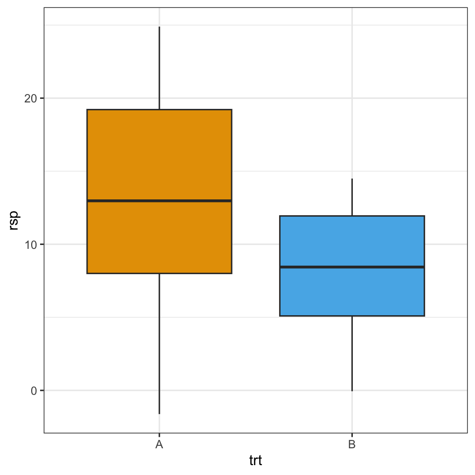
Wir wollen nun die Varianz auf Homogenität testen. Wir nutzen dafür den levenTest() sowie den bartlett.test(). Wir können nur die Varianzhomogenität testen, da jeder statistischer Test nur eine Aussage über die Nullhypothese erlaubt. Damit können wir hier nur die Varianzhomogenität testen.
leveneTest(rsp ~ trt, data = small_heterogen_tbl) %>%
tidy %>%
select(p.value)# A tibble: 1 × 1
p.value
<dbl>
1 0.0661bartlett.test(rsp ~ trt, data = small_heterogen_tbl) %>%
tidy %>%
select(p.value)# A tibble: 1 × 1
p.value
<dbl>
1 0.127Wir sehen, dass der \(p\)-Wert kleiner ist als das Signifikanzniveau \(\alpha\) von 20%. Damit können wir die Nullhypothese ablehnen. Wir nehmen Varianzheterogenität an. Überdies sehen wir auch, dass sich die \(p\)-Werte nicht groß voneinander unterscheiden. Was wir sehen ist, dass wir zu einem Signifikanzniveau von 5% die klare Varianzheterogenität nicht erkannt hätten und immer noch Varianzhomogenität angenommen hätten.
Wir können auch die Funktion check_homogeneity() aus dem Paket {performance} nutzen. Wir erhalten hier auch gleich eine Entscheidung in englischer Sprache ausgegeben. Die Funktion check_homogeneity() nutzt den Bartlett-Test. Wir können in Funktion auch andere Methoden mit method = c("bartlett", "fligner", "levene", "auto") wählen.
lm(rsp ~ trt, data = small_heterogen_tbl) %>%
check_homogeneity()OK: There is not clear evidence for different variances across groups (Bartlett Test, p = 0.127).Wir sehen, dass sich die Implementierung des Bartlett-Tests in check_homogeneity() nicht von der Funktion bartlett.test() unterscheidet, aber die Entscheidung gegen die Varianzhomogenität zu einem Signifikanzniveau von 5% gefällt wird. Nicht immer hilft einem der Entscheidungtext einer Funktion.
22.4 Pre-Test auf Normalverteilung
Wir treffen bei dem Test auf die Normalverteilung auch auf das gleiche Problem wie bei dem Pre-Test zur Varianzhomogenität. Wir haben wieder die Gleichheit, also das unser beobachtetes Outcome gleich einer Normalverteilung ist, in der Nullhypothese stehen. Den Unterschied, also das unser beobachtetes Outcome nicht aus einer Normalverteilung kommmt, in der Alternative.
\[ \begin{aligned} H_0: &\; \mbox{y ist gleich normalverteilt}\\ H_A: &\; \mbox{y ist nicht gleich normalverteilt}\\ \end{aligned} \]
Nun ist es aber so, dass es nicht nur zwei Verteilungen gibt. Es gibt mehr als die Normalverteilung und die Nicht-normalverteilung. Wir haben eine große Auswahl an möglichen Verteilungen und seit den 90zigern des letzten Jahrhunderts auch die Möglichkeiten andere Verteilungen des Outcomes \(y\) zu modellieren. Leider fällt dieser Fortschritt häufig unter den Tisch und wir bleiben gefangen zwischen der Normalverteilung oder eben keiner Normalverteilung.
Der zentrale Grenzwertsatz besagt, dass wenn ein \(y\) von vielen Einflussfaktoren \(x\) bestimmt wird, man von einem normalverteilten \(y\) ausgehen.
Das Gewicht wird von vielen Einflussfaktoren wie Sport, Kalorienaufnahme oder aber Veranlagung sowie vielem mehr bestimmt. Wir können davon ausgehen, dass das Gewicht normalverteilt ist.
Abschließend sei noch gesagt, dass es fast unmöglich ist, eine Verteilung mit weniger als zwanzig Beobachtungen überhaupt abzuschätzen. Selbst dann können einzelne Beobachtunge an den Rändern der Verteilung zu einer Ablehnung der Normalverteilung führen, obwohl eine Normalverteilung vorliegt.
Das R Paket {oslrr} bietet hier noch eine Funktion ols_test_normality(), die es erlaubt mit allen bekannten statistischen Tests auf Normalverteilung zu testen. Wenn der \(p\)-Wert kleiner ist als das Signifikanzniveau \(\alpha\), dann können wir die Nullhypothese, dass unsere Daten gleich einer Normalverteilung wären, ablehnen. Die Anwendung kannst du dir in Kapitel 46 anschauen. Um jetzt kurz einen statistischen Engel anzufahren, wir nutzen wenn überhaupt den Shapiro-Wilk-Test oder den Kolmogorov-Smirnov-Test. Für die anderen beiden steigen wir jetzt hier nicht in die Therorie ab.
Am Ende sei noch auf den QQ-plot verwiesen, mit dem wir auch visuell überprüfen können, ob eine Normalverteilung vorliegt.
Entscheidung zur Normalverteilung
Bei der Entscheidung zur Normalverteilung gilt folgende Regel. Ist der \(p\)-Wert des Pre-Tests auf Normalverteilung kleiner als das Signifikanzniveau \(\alpha\) von 5% lehnen wir die Nullhypothese ab. Wir nehmen eine Nicht-Normalverteilung an.
- Ist \(p \leq \alpha = 5\%\) so nehmen wir Nicht-Normalverteilung von \(y\) an.
- Ist \(p > \alpha = 5\%\) so nehmen wir Normalverteilung von \(y\) an.
Auf jeden Fall sollten wir das Ergebnis unseres Pre-Tests auf Normalverteilung nochmal visuell bestätigen.
22.4.1 Approximativ normalverteilt, niedrige Fallzahl
Auch hier schauen wir uns den Fall mit einer niedrigen Fallzahl an. Dafür bauen wir usn erstmal Daten mit der Funktion rt(). Wir ziehen uns zufällig Beobachtungen aus einer t-Verteilung, die approximativ normalverteilt ist. Je höher die Freiheitsgrade df desto näher kommt die t-Verteilung einer Normalverteilung. Mit einem Freiheitsgrad von df = 30 sind wir sehr nah an einer Normalverteilung dran.
set.seed(202209013)
low_normal_tbl <- tibble(A = rt(10, df = 30),
B = rt(10, df = 30)) %>%
gather(trt, rsp) %>%
mutate(trt = as_factor(trt))In Abbildung 22.14 sehen wir auf der linken Seite den Dotplot der zehn Beobachtungen aus den beiden Gruppen \(A\) und \(B\). Wir sehen, dass die Verteilung für das Outcome rsp in etwa normalverteilt ist.
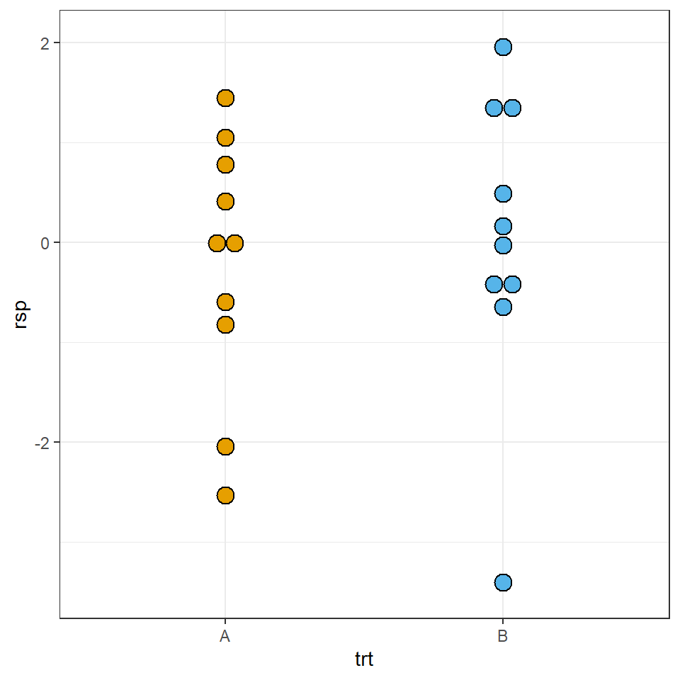
rsp.
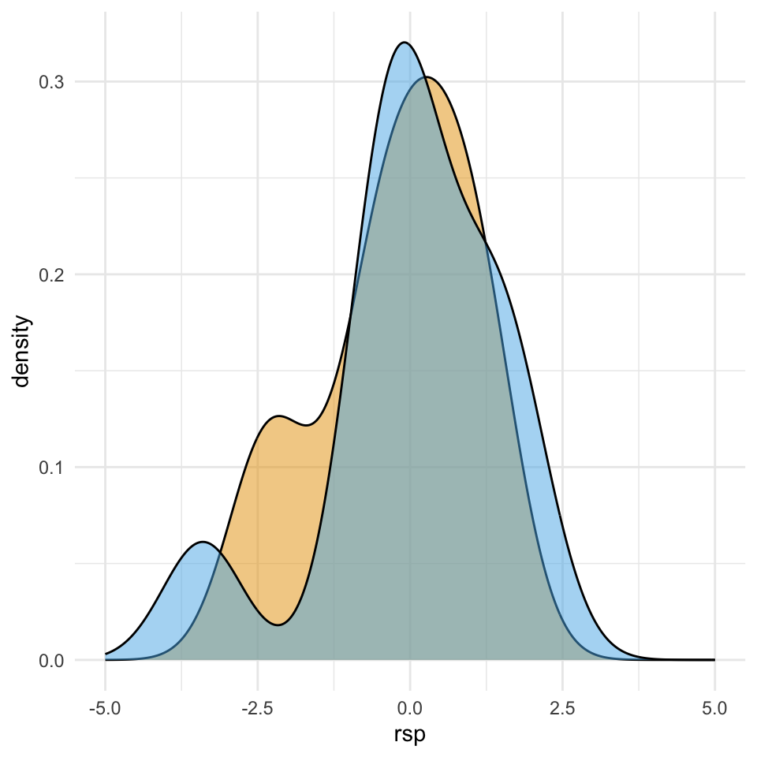
rsp.
rsp der zehn Beobachtungen aus den Gruppen \(A\) und \(B\). Beiden Gruppen kommen aus einer t-Verteilung.
Wir können den Shapiro-Wilk-Test nutzen um statistisch zu testen, ob eine Abweichung von der Normalverteilung vorliegt. Wir erfahren aber nicht, welche andere Verteilung vorliegt. Wir testen natürlich für die beiden Gruppen getrennt. Die Funktion shapiro.test()kann nur mit einem Vektor von Zahlen arbeiten, daher übergeben wir mit pull die entsprechend gefilterten Werte des Outcomes rsp.
low_normal_tbl %>%
filter(trt == "A") %>%
pull(rsp) %>%
shapiro.test()
Shapiro-Wilk normality test
data: .
W = 0.9457, p-value = 0.618low_normal_tbl %>%
filter(trt == "B") %>%
pull(rsp) %>%
shapiro.test()
Shapiro-Wilk normality test
data: .
W = 0.89291, p-value = 0.1828Wir sehen, dass der \(p\)-Wert größer ist als das Signifikanzniveau \(\alpha\) von 5% für beide Gruppen. Damit können wir die Nullhypothese nicht ablehnen. Wir nehmen eine Normalverteilung an.
In dem folgendem Beispiel sehen wir dann aber, was ich mit in die Ecke testen meine bzw. so lange statistisch zu Testen bis nichts mehr geht.
22.4.2 Nicht normalverteilt, niedrige Fallzahl
Schauen wir uns jetzt den anderen Fall an. Wir haben jetzt wieder eine niedrige Fallzahl mit je 10 Beobachtungen je Gruppe \(A\) und \(B\). In diesem Fall kommen die Beobachtungen aber aus einer exponentiellen Verteilung. Wir haben also definitiv keine Normalverteilung vorliegen. Wir generieren uns die Daten mit der Funktion rexp().
set.seed(202209013)
low_nonnormal_tbl <- tibble(A = rexp(10, 1/1500),
B = rexp(10, 1/1500)) %>%
gather(trt, rsp) %>%
mutate(trt = as_factor(trt))In Abbildung 22.15 sehen wir auf der linken Seite den Dotplot der zehn Beobachtungen aus den beiden Gruppen \(A\) und \(B\). Wir sehen, dass die Verteilung für das Outcome für die Behandlung \(B\) in etwa normalverteilt ist sowie das das Outcome für die Behandlung \(A\) keiner Normalverteilung folgt oder zwei Ausreißer hat. Die Entscheidung was jetzt stimmt ohne zu wissen wie die Daten generiert wurden, ist in der Anwendung meist nicht möglich.
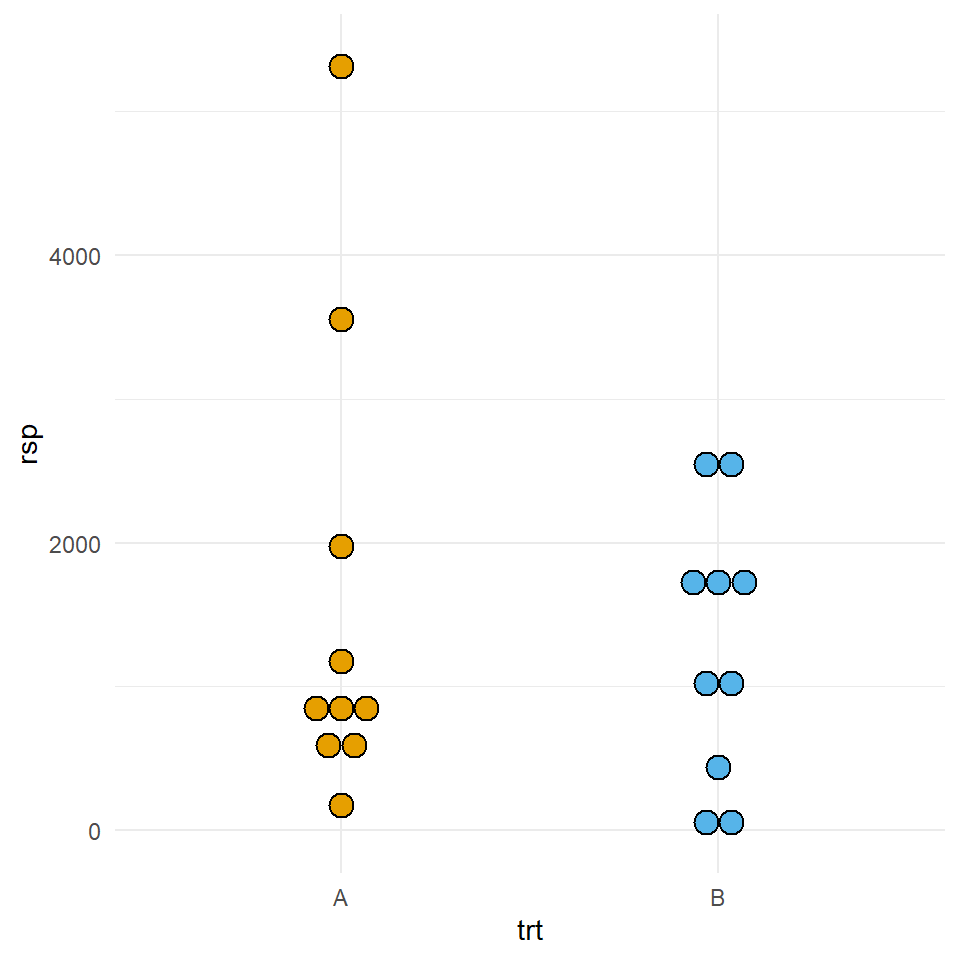
rsp.
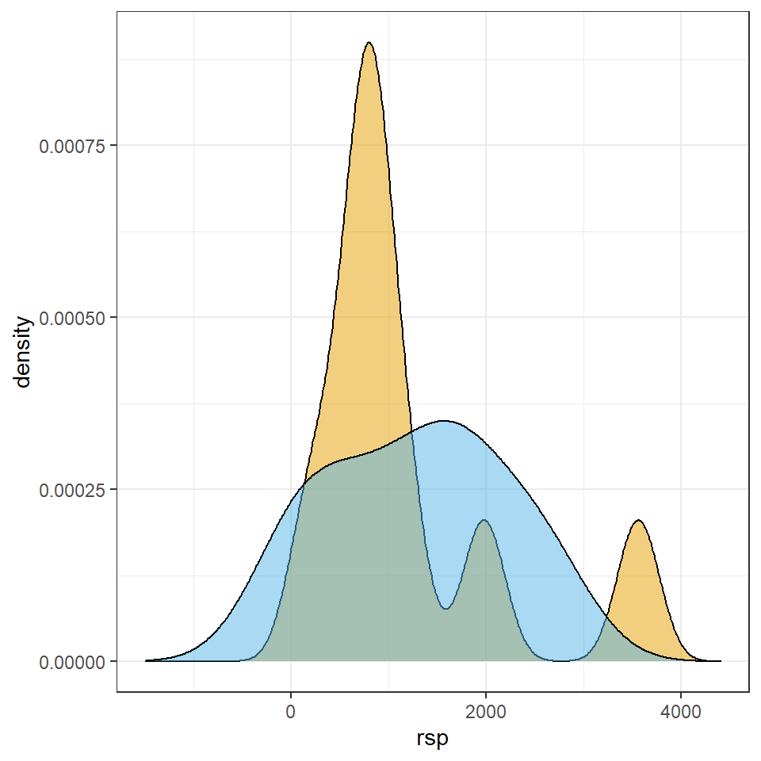
rsp.
rsp der zehn Beobachtungen aus den Gruppen \(A\) und \(B\). Beiden Gruppen kommen aus einer Exponentialverteilung.
Wir können wieder den Shapiro-Wilk-Test nutzen um statistisch zu testen, ob eine Abweichung von der Normalverteilung vorliegt. Wir erfahren aber nicht, welche andere Verteilung vorliegt. Wir testen natürlich für die beiden Gruppen getrennt.
low_nonnormal_tbl %>%
filter(trt == "A") %>%
pull(rsp) %>%
shapiro.test()
Shapiro-Wilk normality test
data: .
W = 0.77114, p-value = 0.006457low_nonnormal_tbl %>%
filter(trt == "B") %>%
pull(rsp) %>%
shapiro.test()
Shapiro-Wilk normality test
data: .
W = 0.93316, p-value = 0.4797Wir sehen, dass der \(p\)-Wert für die Behandlung \(A\) kleiner ist als das Signifikanzniveau \(\alpha\) von 5%. Damit können wir die Nullhypothese ablehnen. Wir nehmen keine Normalverteilung für Gruppe \(A\) an. Auf der anderen Seite sehen wir, dass der \(p\)-Wert für die Behandlung \(B\) größer ist als das Signifikanzniveau \(\alpha\) von 5%. Damit können wir die Nullhypothese nicht ablehnen. Wir nehmen eine Normalverteilung für Gruppe \(A\) an.
Super, jetzt haben wir für die eine Gruppe eine Normalverteilung und für die andere nicht. Wir haben uns in die Ecke getestet. Wir können jetzt verschiedene Szenarien vorliegen haben.
- Wir könnten in der Gruppe \(A\) zwei Ausreißer vorliegen haben.
- Wir könnten in der Gruppe \(B\) zufällig eine Normalverteilung beobachtet haben.
Und nochmal zum Schluß, einem statistischen Test mit 4 bis 5 Wiederholungen in einer Gruppe zu glauben, ob eine Normalverteilung vorliegt, kannst du auch würfeln…
Leider wissen wir im echten Leben nicht, aus welcher Verteilung unsere Daten stammen, wir können aber annehmen, dass die Daten einer Normalverteilung folgen oder aber die Daten so transformieren, dass die Daten einer approximativen Normalverteilung folgen. Siehe dazu auch das Kapitel 18 zur Transformation von Daten.
Wenn deine Daten keiner Normalverteilung folgen, dann kann es sein, dass du mit den Effektschätzern ein Problem bekommst. Du erfährst vielleicht, dass du die Nullhypothese ablehnen kannst, aber nicht wie stark der Effekt in der Einheit des gemessenen Outcomes ist.
22.4.3 Testen der Normalverteilungsannahme in mehreren Gruppen
Im folgenden Beispiel zu den Keimungsraten von verschiedenen Nelkensorten wollen wir einmal testen, ob jede Sorte einer Normalverteilung folgt. Da wir hier insgesamt 20 Sorten vorliegen haben, nutzen wir die Funktion map() aus dem R Paket {purrr} um hier schneller voranzukommen. Wie immer laden wir erst die Daten und mutieren die Spalten in dem Sinne wie wir die Spalten brauchen.
clove_tbl <- read_excel("data/clove_germ_rate.xlsx") %>%
mutate(clove_strain = as_factor(clove_strain),
germ_rate = as.numeric(germ_rate))Jetzt können wir die Daten nach der Sorte der Nelken in eine Liste mit der Funktion split() aufspalten und dann auf jedem Listeneintrag einen Shapiro-Wilk-Test rechnen. Dann machen wir uns noch die Ausgabe schöner und erschaffen uns eine decision-Spalte in der wir gleich das Ergebnis für oder gegen die Normalverteilung ablesen können.
clove_tbl %>%
split(.$clove_strain) %>%
map(~shapiro.test(.x$germ_rate)) %>%
map(tidy) %>%
bind_rows(.id = "test") %>%
select(test, p.value) %>%
mutate(decision = ifelse(p.value <= 0.05, "reject normal", "normal"),
p.value = pvalue(p.value, accuracy = 0.001))# A tibble: 20 × 3
test p.value decision
<chr> <chr> <chr>
1 standard 0.272 normal
2 west_rck_1 0.272 normal
3 south_III_V 0.855 normal
4 west_rck_2_II 0.653 normal
5 comb_001 0.103 normal
6 western_4 0.849 normal
7 north_549 0.855 normal
8 subtype_09 0.983 normal
9 subtype_III_4 0.051 normal
10 ctrl_pos 0.992 normal
11 ctrl_7 0.683 normal
12 trans_09_I 0.001 reject normal
13 new_xray_9 0.406 normal
14 old_09 0.001 reject normal
15 recon_1 0.100 normal
16 recon_3456 0.001 reject normal
17 east_new 0.907 normal
18 east_old 0.161 normal
19 south_II_U 0.048 reject normal
20 west_3_cvl 0.272 normal 22.5 Visuelle Überprüfung
Abschließend möchte ich hier nochmal das R Paket {performance} vorstellen. Wir können mit dem Paket auch die Normalverteilungsannahme der Residuen überprüfen sowie die Annahme der Homogenität der Varianzen. Das geht ganz einfach mit der Funktion check_model() in die wir einfach das Objekt mit dem Fit des Modells übergeben.
lm_fit <- lm(germ_rate ~ clove_strain, clove_tbl)Tja und schon haben wir in der Abbildung 22.16 mehr als wir eigentlich wollen. Aber du siehst hier ganz gut, dass wir in diesen Daten Probleme mit der Varianzhomogenität haben. Die Linie in dem Subplot “Homogeneity of Variance” ist nicht flach und horizontal. Deshalb könnten wir die Daten einmal Transformieren oder aber mit der Varianzheterogenität modellieren. Das Modellieren machen wir gleich mal im Anschluss.
lm_fit %>% check_model(check = c("normality", "linearity", "homogeneity", "qq"))
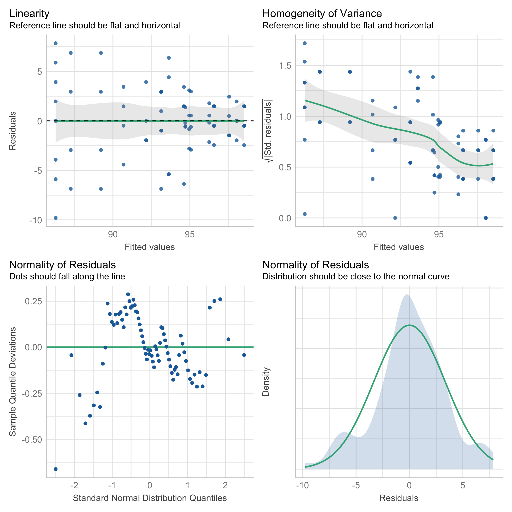
check_model() nach der Modellierung mit der Funktion lm() und der Annahme der Varianzhomogenität.
Jetzt modellieren wir einmal die Effekte der clove_strain unter der Annahme der Varianzheterogenität. Die Funktion gls() aus dem R Paket {nlme} passt ein lineares Modell unter Verwendung der verallgemeinerten kleinsten Quadrate an. Die Fehler dürfen dabei aber korreliert oder aber ungleiche Varianzen haben. Damit haben wir ein Modell, was wir nutzen können, wenn wir Varianzheterogenität vorliegen haben.
gls_fit <- gls(germ_rate ~ clove_strain,
weights = varIdent(form = ~ 1 | clove_strain),
data = clove_tbl)Wir gehen hier nicht tiefer auf die Funktion ein. Wir müssen nur die weights so angeben, dass die weights die verschiedenen Gruppen in dem Faktor clove_strain berücksichtigen können. Dann haben wir schon das Modell für die Varianzheterogenität. Mehr musst du dann auch nicht machen, dass ist dann manchmal das schöne in R, dass wir dann auch immer wieder auf gewohnte Templates zurückgreifen können.
In der Abbildung 22.17 sehen wir das Ergebnis der Modellanpassung. Sieht gut aus, jedenfalls besser als mit dem lm(). Besonders schön sehen wir, dass wir dann auch wieder normalverteilte Residuen vorliegen haben. Damit ist eine wichtige Annahme an das Modell erfüllt. Das wäre jetzt ein gutes Modell um im Anschluss emmeans() zu nutzen. Da gehst du dann aber bitte in das Kapitel zu den Posthoc Tests.
gls_fit %>% check_model(check = c("normality", "linearity", "qq"))
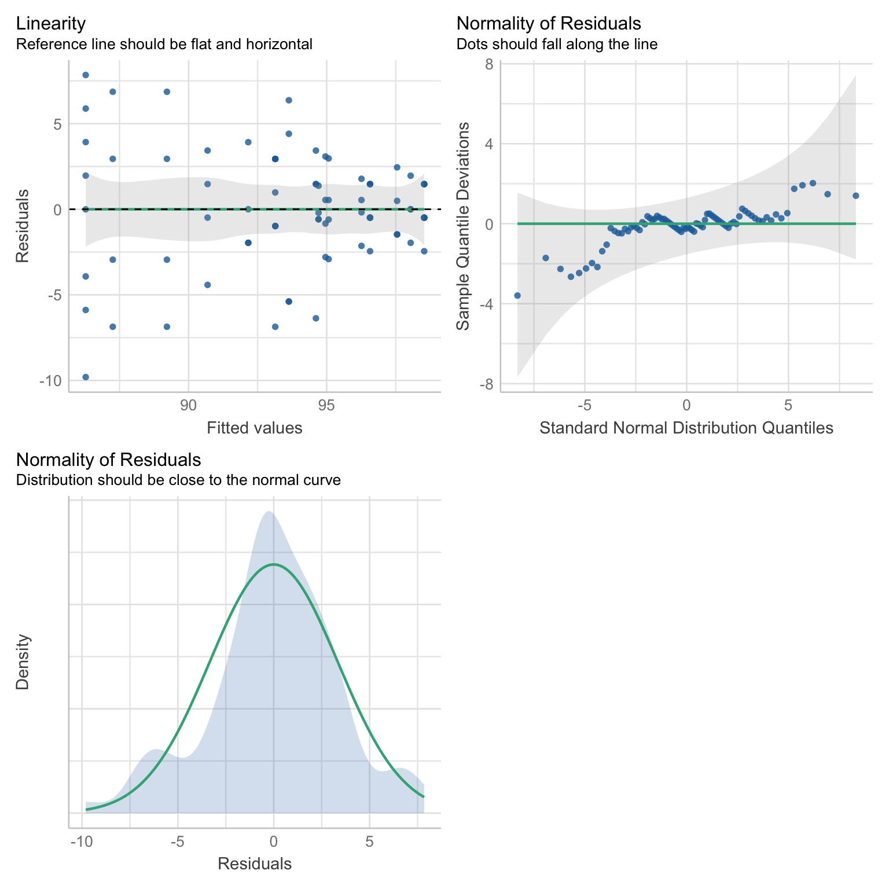
check_model() nach der Modellierung mit der Funktion gls() und der Annahme der Varianzheterogenität über die Gruppen von clove_strain.
Referenzen
Kozak M, Piepho H-P. 2018. What’s normal anyway? Residual plots are more telling than significance tests when checking ANOVA assumptions. Journal of agronomy and crop science 204: 86–98.
Zuur AF, Ieno EN, Elphick CS. 2010. A protocol for data exploration to avoid common statistical problems. Methods in ecology and evolution 1: 3–14.